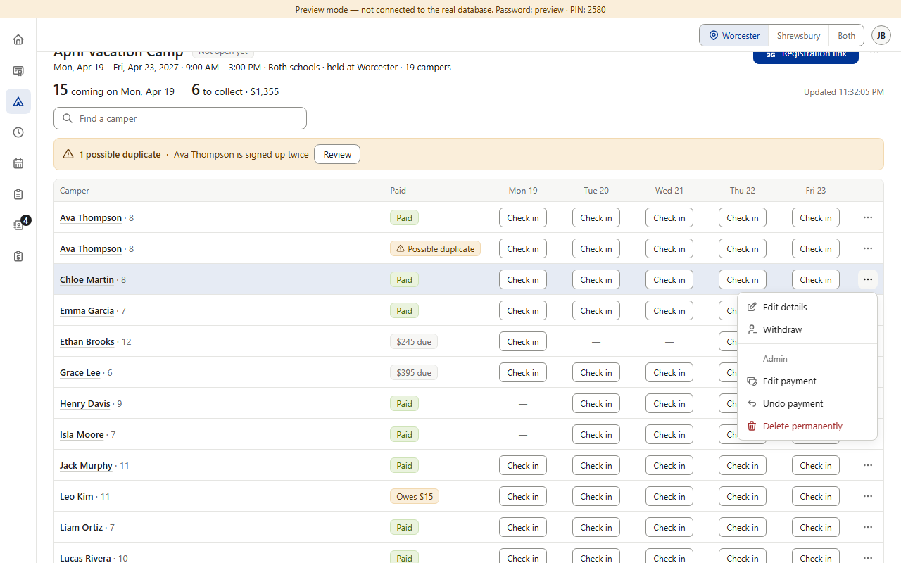
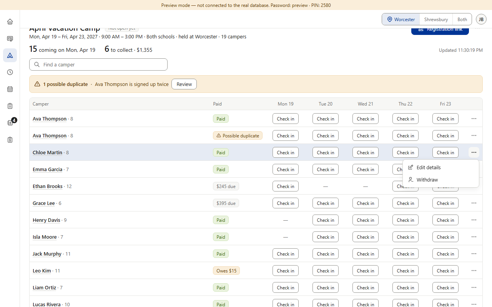
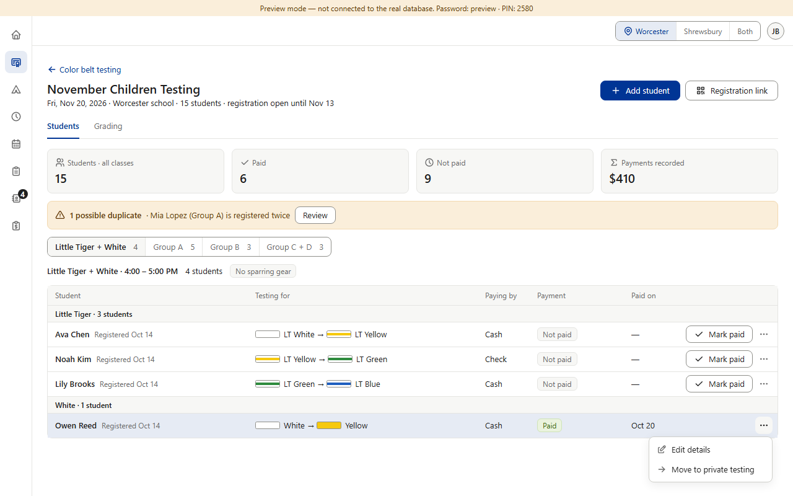
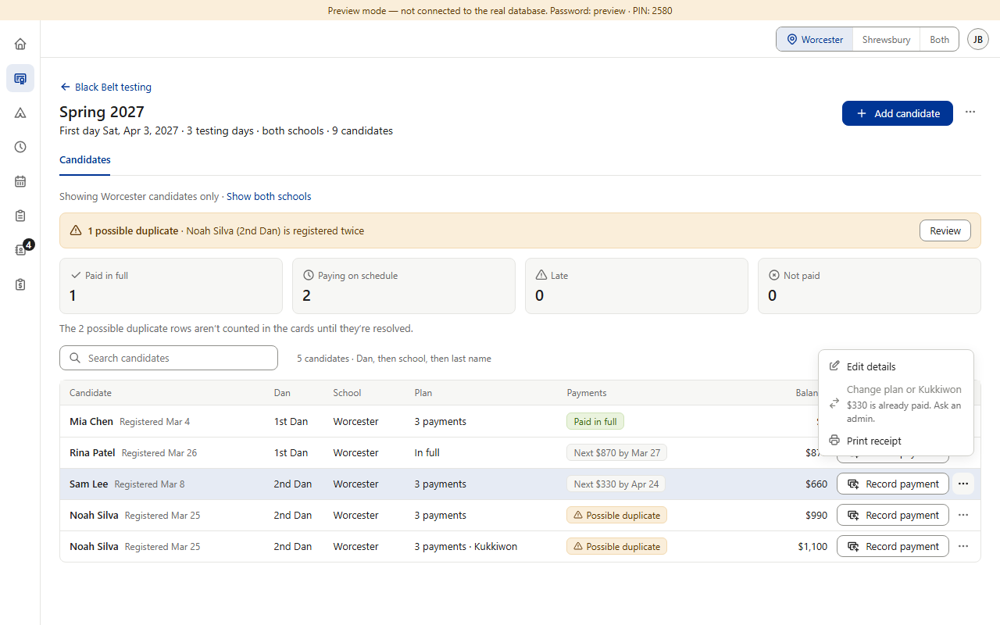
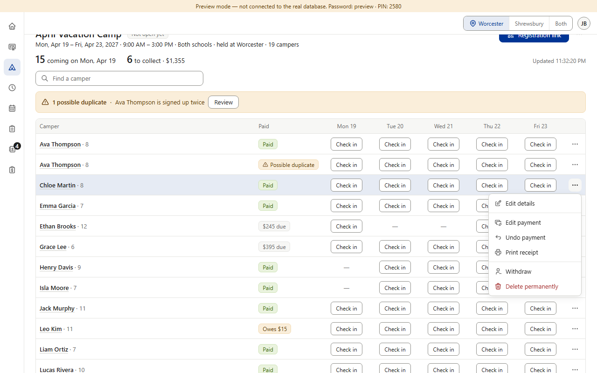
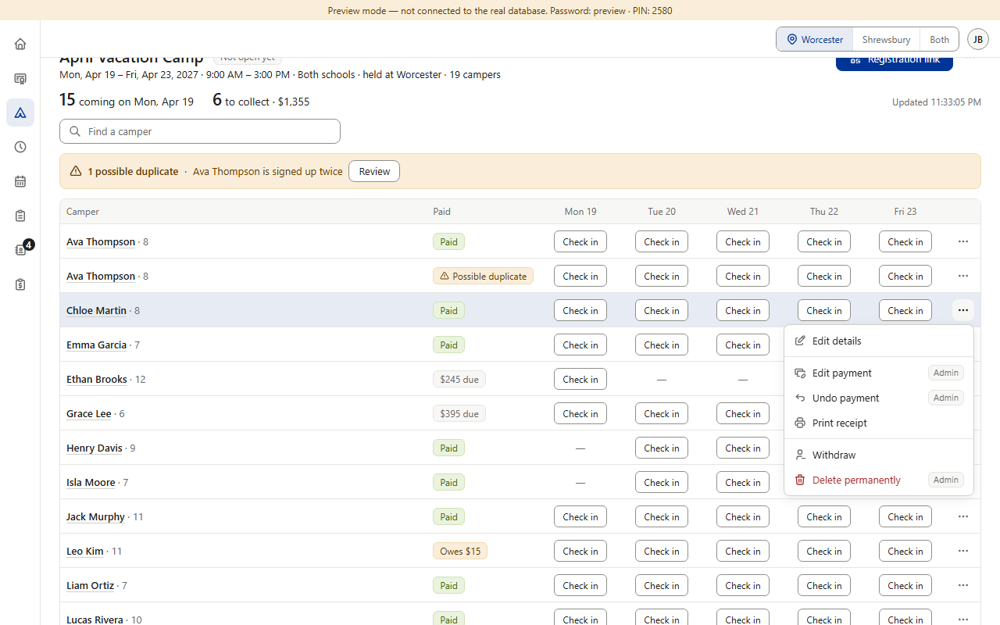

Approved in each section, and almost the same already. Every section hides what staff can never do — staff simply don't see those items (Star v0.110, Black Belt v0.210, Camps v0.700). The one difference: Camps also shows admins a gray “Admin” heading above those items (approved, v0.713). With item 10a's order that heading can't stay as it is: the admin-only items now sit in two different groups (money, and taking someone off). (Preview screenshots at PC size · fake data)
Today · admin, then staff

1. Camps, as an admin: a gray “Admin” heading over the items staff can't use.

2. The same camper as staff: those items simply aren't there — and neither is the heading.

3. Color Belt as staff: the same rule (Star too); admins see no heading here.

4. Black Belt as staff: what staff can do, but not right now, is grayed with its reason: “$330 is already paid. Ask an admin.”
Not part of this question: the account menu's “Admin” group (Staff accounts and the other admin pages). It lists pages, not actions on a person, and staff never see it (v0.70).
Options B and C · Camps as an admin, in 10a's order

5. B · recommended: no heading. Admins see the whole menu in 10a's order; staff see only what they can do, as today.

6. C: a small “Admin” tag on each line staff can't use. The menu has to get wider.
The rule in B — the same in every menu: staff don't see what they can never do (how every section works today); what they can do but not right now stays grayed, with a gray “Ask an admin” reason line (Black Belt's picture 4, and “Open registration” after the closing date; item 5). Admins see the whole menu in item 10a's order. Pictures 5–6 are drawn over the real menu; nothing in the app was changed.
Your choice — one question: A · Keep Camps' “Admin” heading.+ admins see at a glance what the desk can't do. − it only works if Camps keeps its admin items together, which breaks item 10a's order in Camps; no other section has it. B · Recommended: no heading anywhere — one rule (picture 5). Staff don't see what they can never do; what they can do but not right now is grayed with an “Ask an admin” reason; admins see the whole menu in 10a's order. + one simple rule, already how every section works apart from Camps' heading; the Grandmaster's menu stays clean. − admins can't see at a glance which items the desk doesn't have. C · A small “Admin” tag on each admin-only line, everywhere (picture 6).+ keeps 10a's order and still shows admins what the desk can't do. − every admin menu gets busier and wider; a new pattern to build in every section.